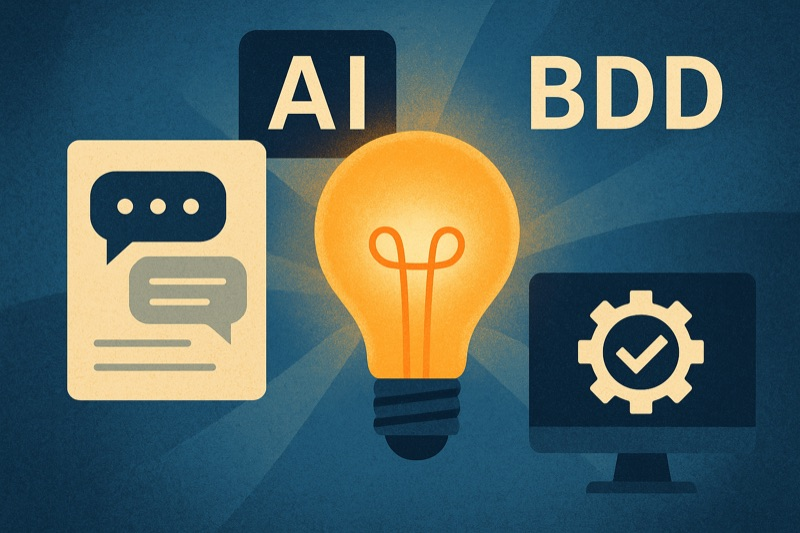

Chat Transcripts, AI, and BDD: Escaping the Feature Factory Trap
When I look back at some of the organisations I have worked in, especially larger ones in financial services, one pattern really stands out: the feature factory.
You probably know the setup. Product is a silo. Engineering is a silo. QA is a silo. Work is passed down the line. At some point someone decides that "we are agile now" and introduces scrum teams. But the dynamic does not really change.
The product owner turns up with "requirements." They are written as user stories, as an X, I want to Y, so that Z, with acceptance criteria written in Given/When/Then. At first glance, it looks modern, it looks agile. But peel it back and it is just the old requirements document wrapped up in new clothes.
I remember working with 30 page Word documents that detailed exactly how a system shall behave. Those became Jira tickets with story points. Developers were asked to size them (always a proxy for time), and then the game was: how fast can we burn through these? How accurate are our estimates? Being "good at estimation" was treated like the holy grail.
The problem is that nothing about this encouraged shared understanding, creativity, or real negotiation of value. We were still operating a production line, only now with stickies and burndown charts.
From conversations to transcripts
Fast forward to the way we work today. Most teams are remote or hybrid. Very few product conversations happen in a room with a whiteboard. They happen on Zoom, Teams, or Meet.
The great side effect is that those conversations can be captured. You can switch on subtitles. You can use meeting assistants like Fathom, which I have used extensively, or Granola. You can even just highlight and copy subtitles directly from Teams. And if all else fails, you can run the audio through Whisper, the open source speech to text model that can transcribe any recording with impressive accuracy.
In other words, you have a transcript of what was actually said. That transcript is gold.
Because once you have it, you can feed it into an AI model such as ChatGPT, Claude, or Copilot, and ask it to produce artefacts:
- User stories with acceptance criteria
- A backlog summary
- Skeleton UI tests in Playwright or Selenium
- Even draft release notes
The magic is simple. The AI just tells you what you told it, but in a structured, useful format.
Why BDD fits perfectly here
This is where Behaviour Driven Development (BDD) principles enter the picture.
People often lump BDD in with TDD (test driven development). But they are not the same thing. TDD is an engineering discipline: write a failing test, then write code until it passes. In practice, most teams do not do this strictly, though they may adopt the spirit of it.
BDD, on the other hand, is not really about testing at all. It is about collaboration. John Ferguson Smart defines it like this:
"BDD is a collaborative software development process focused on building a shared understanding of requirements through conversations around concrete examples and structured executable specifications, ultimately leading to higher quality, more valuable software."
The key phrase there is "conversations around concrete examples."
Now, think about what happens in your refinement or planning sessions. Someone asks, "What happens if the user does this?" Someone else counters, "What if the API call fails here?" The tester jumps in, "Okay, but how are we going to verify that?"
That is BDD in action. And if you capture it in a transcript, you have the raw material to turn it into executable specifications.
From transcript to automation
Here is the workflow I propose:
- Start with a conversation starter. Product, or whoever is requesting, brings a rough idea, not a command but a request.
- Have the conversation. Developers, testers, product managers explore it together, surfacing edge cases and trade offs.
- Record and transcribe. Use Fathom, Granola, Teams subtitles, or Whisper. It does not matter how, just capture the words.
- Feed it to AI. Ask the model to generate user stories and draft test automation.
- Refine together. Humans review, adjust, and commit to scope. The automation is now part of the definition of done.
Let us make this more concrete with an example.
Transcript snippet (refinement call)
This is a much richer conversation. It includes the normal flow, alternative flows, and business rules.
AI output (combined Gherkin + Playwright)
Gherkin scenarios:
Feature: Course Booking
Scenario: User books a course successfully
Given a user has completed all prerequisites
And the course has available spaces
When the user clicks "Book this course"
Then the user should see a confirmation message
And the user should appear on the course attendee list
Scenario: Course is full
Given a user has completed all prerequisites
And the course has no available spaces
When the user clicks "Book this course"
Then the user should see "Course is full, please join the waitlist"
And the user should be added to the waitlist
Scenario: User has not completed prerequisites
Given a user has not completed the required modules
When the user clicks "Book this course"
Then the user should see "You must complete prerequisites before booking"
And the booking should not be createdPlaywright test (one scenario):
import { test, expect } from '@playwright/test';
test.describe('Course Booking', () => {
test('should add user to waitlist when course is full', async ({ page }) => {
await page.goto('/courses/123?state=full');
await page.click('button#book-course');
await expect(page.locator('.error-message'))
.toHaveText('Course is full, please join the waitlist');
const waitlist = await page.locator('#waitlist li').allTextContents();
expect(waitlist).toContain('user@example.com');
});
});Why this matters
Notice what happened. The conversation generated the requirements. The transcript preserved them. The AI transformed them into executable tests.
The tests now act as both documentation and guardrails. They describe what "done" looks like in a form the whole team can understand. Before a line of production code is written, the team already has executable specifications waiting to pass.
This is the heart of BDD. The transcript does not replace collaboration, it captures collaboration. And with AI, you can leapfrog from conversation to automation in one step.
Why this is so powerful
- It stops product from throwing requirements over the wall. Everything starts as a request, not a command.
- It gives developers and testers a stronger voice: "How will we test this?" is baked into the process.
- It automates the boring parts. AI handles formatting and skeleton code so humans can focus on value.
- It moves teams away from the feature factory, towards negotiated, verifiable outcomes.
I have seen teams spend hours rewriting notes into Jira tickets, debating story point estimates, and trying to remember what was said in refinement. With transcripts, AI, and BDD thinking, you shortcut that entire cycle. The conversation is the requirement. The transcript is the source of truth. The automation is the contract.
Beyond product engineering
This post has focused on product engineering, but the idea stretches much further. Customer interviews. Incident reviews. Sales calls. Anywhere you have recorded conversations, you can use transcripts and AI to generate artefacts that move you forward.
I plan to write more about this, perhaps a series on the power of transcripts. But if there is one thing to take away now, it is this:
Do not waste your meeting transcripts. They are the richest artefact you have. Combine them with AI and BDD thinking, and you can transform the way your teams work.
Published: February 2025 | Get in touch to discuss how AI can transform your development process